Using AnimationTree
Introduction
With AnimationPlayer, Godot has one of the most flexible animation systems that you can find in any game engine. It is pretty much unique in its ability to animate almost any property in any node or resource, and its dedicated transform, bezier, function calling, audio, and sub-animation tracks.
However, the support for blending those animations via AnimationPlayer is limited, as you can only set a fixed cross-fade transition time.
AnimationTree is a node designed to deal with advanced transitions.
AnimationTree and AnimationPlayer
Before starting, know that an AnimationTree node does not contain its own animations.
Instead, it uses animations contained in an AnimationPlayer node. You create, edit, or import your animations in an AnimationPlayer
and then use an AnimationTree to control the playback.
AnimationPlayer and AnimationTree can be used in both 2D and 3D scenes. When importing 3D scenes and their animations, you can use
name suffixes
to simplify the process and import with the correct properties. At the end, the imported Godot scene will contain the animations in an AnimationPlayer node.
Since you rarely use imported scenes directly in Godot (they are either instantiated or inherited from), you can place the AnimationTree node in your
new scene which contains the imported one. Afterwards, point the AnimationTree node to the AnimationPlayer that was created in the imported scene.
This is how it's done in the Third Person Shooter demo, for reference:

A new scene was created for the player with a CharacterBody3D as root. Inside this scene, the original .dae (Collada) file was instantiated
and an AnimationTree node was created.
Creating a tree
To use an AnimationTree, you have to set a root node. An animation root node is a class that contains and evaluates sub-nodes and outputs an animation.
There are 3 types of sub-nodes:
Animation nodes, which reference an animation from the linked
AnimationPlayer.Animation Root nodes, which are used to blend sub-nodes and can be nested.
Animation Blend nodes, which are used in an
AnimationNodeBlendTree, a 2D graph of nodes. Blend nodes take multiple input ports and give one output port.
A few types of root nodes are available:
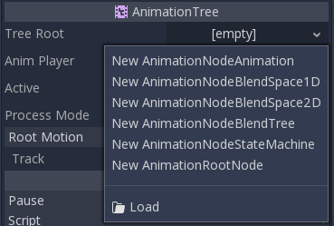
AnimationNodeAnimation: Selects an animation from the list and plays it. This is the simplest root node, and generally not used as a root.AnimationNodeBlendTree: Contains multiple nodes as children in a graph. Many blend nodes are available, such as mix, blend2, blend3, one shot, etc.AnimationNodeBlendSpace1D: Allows linear blending between two animation nodes. Control the blend position in a 1D blend space to mix between animations.AnimationNodeBlendSpace2D: Allows linear blending between three animation nodes. Control the blend position in a 2D blend space to mix between animations.AnimationNodeStateMachine: Contains multiple nodes as children in a graph. Each node is used as a state, with multiple functions used to alternate between states.
Blend tree
When you make an AnimationNodeBlendTree, you get an empty 2d graph in the bottom panel, under the AnimationTree tab. It contains only an Output
node by default.
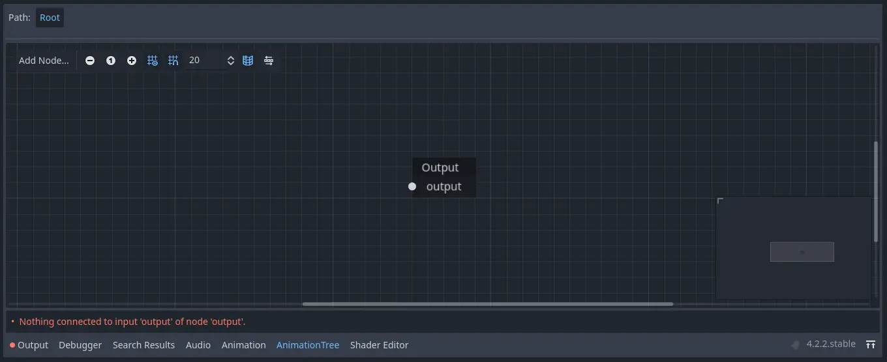
In order for animations to play, a node has to be connected to the output. You can add nodes from the Add Node.. menu or by right clicking an empty space:
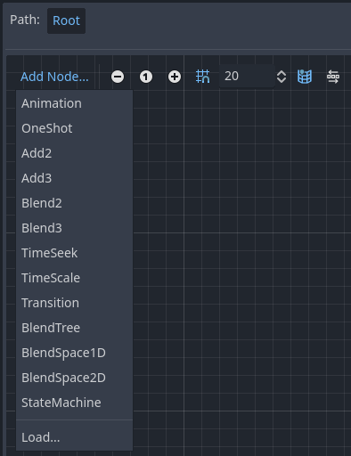
The simplest connection to make is to connect an Animation node to the output directly, which will just play back the animation.
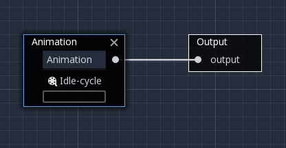
Following is a description of the other available nodes:
Blend2 / Blend3
These nodes will blend between two or three inputs by a user-specified blend value:

Blending can use filters to control individually which tracks get blended and which do not. This can be useful for layering animations on top of each other.

For more complex blending, it is recommended to use blend spaces instead.
OneShot
This node will execute an animation once and return when it finishes. You can customize blend times for fading in and out, as well as filters.
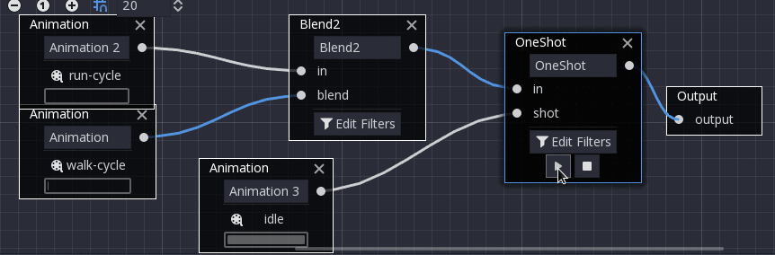
# Play child animation connected to "shot" port.
animation_tree.set("parameters/OneShot/request", AnimationNodeOneShot.ONE_SHOT_REQUEST_FIRE)
# Alternative syntax (same result).
animation_tree["parameters/OneShot/request"] = AnimationNodeOneShot.ONE_SHOT_REQUEST_FIRE
# Abort child animation connected to "shot" port.
animation_tree.set("parameters/OneShot/request", AnimationNodeOneShot.ONE_SHOT_REQUEST_ABORT)
# Alternative syntax (same result).
animation_tree["parameters/OneShot/request"] = AnimationNodeOneShot.ONE_SHOT_REQUEST_ABORT
# Get current state (read-only).
animation_tree.get("parameters/OneShot/active"))
# Alternative syntax (same result).
animation_tree["parameters/OneShot/active"]
// Play child animation connected to "shot" port.
animationTree.Set("parameters/OneShot/request", (int)AnimationNodeOneShot.OneShotRequest.Fire);
// Abort child animation connected to "shot" port.
animationTree.Set("parameters/OneShot/request", (int)AnimationNodeOneShot.OneShotRequest.Abort);
// Get current state (read-only).
animationTree.Get("parameters/OneShot/active");
TimeSeek
This node allows you to seek to a time in the animation connected to its in input. Use this node to play an Animation starting from a certain playback position.
Note that the seek request value is measured in seconds, so if you would like to play an animation from the beginning, set the value to 0.0, or if you would like
to play an animation from 3 seconds in, set the value to 3.0.

# Play child animation from the start.
animation_tree.set("parameters/TimeSeek/seek_request", 0.0)
# Alternative syntax (same result).
animation_tree["parameters/TimeSeek/seek_request"] = 0.0
# Play child animation from 12 second timestamp.
animation_tree.set("parameters/TimeSeek/seek_request", 12.0)
# Alternative syntax (same result).
animation_tree["parameters/TimeSeek/seek_request"] = 12.0
// Play child animation from the start.
animationTree.Set("parameters/TimeSeek/seek_request", 0.0);
// Play child animation from 12 second timestamp.
animationTree.Set("parameters/TimeSeek/seek_request", 12.0);
TimeScale
This node allows you to scale the speed of the animation connected to its in input. The speed of the animation will be multiplied by the number in the scale parameter. Setting the scale to 0 will pause the animation. Setting the scale to a negative number will play the animation backwards.
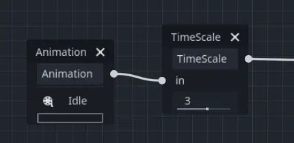
Transition
This node is a simplified version of a StateMachine. You connect animations to the inputs, and the current state index determines which animation to play. You may specify a crossfade transition time. In the Inspector, you may change the number of input ports, rearrange inputs, or delete inputs.

# Play child animation connected to "state_2" port.
animation_tree.set("parameters/Transition/transition_request", "state_2")
# Alternative syntax (same result).
animation_tree["parameters/Transition/transition_request"] = "state_2"
# Get current state name (read-only).
animation_tree.get("parameters/Transition/current_state")
# Alternative syntax (same result).
animation_tree["parameters/Transition/current_state"]
# Get current state index (read-only).
animation_tree.get("parameters/Transition/current_index"))
# Alternative syntax (same result).
animation_tree["parameters/Transition/current_index"]
// Play child animation connected to "state_2" port.
animationTree.Set("parameters/Transition/transition_request", "state_2");
// Get current state name (read-only).
animationTree.Get("parameters/Transition/current_state");
// Get current state index (read-only).
animationTree.Get("parameters/Transition/current_index");
StateMachine
When you make an AnimationNodeStateMachine, you get an empty 2d graph in the bottom panel, under the AnimationTree tab. It contains a Start and End
state by default.
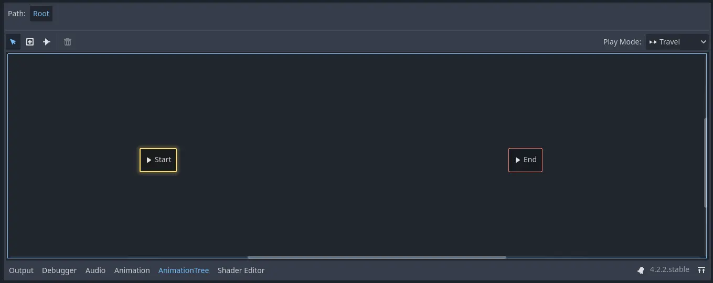
To add states, right click or use the create new nodes button, whose icon is a plus in a box. You can add animations, blendspaces, blendtrees, or even another StateMachine. To edit one of these more complex sub-nodes, click on the pencil icon on the right of the state. To return to the original StateMachine, click Root on the top left of the panel.
Before the StateMachine can do anything useful, the states must be connected with transitions. To add a transition, click the connect nodes button, which is a line with a right-facing arrow, and drag between two states. You can create 2 transitions between states, one going in each direction.
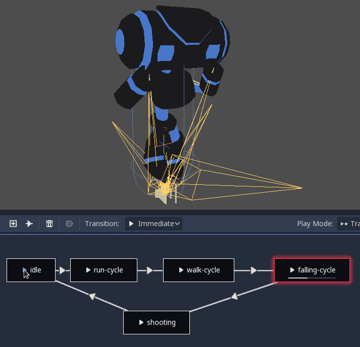
There are 3 types of transitions:

Immediate: Will switch to the next state immediately.
Sync: Will switch to the next state immediately, but will seek the new state to the playback position of the old state.
At End: Will wait for the current state playback to end, then switch to the beginning of the next state animation.
Transitions also have a few properties. Click a transition and it will be displayed in the inspector:
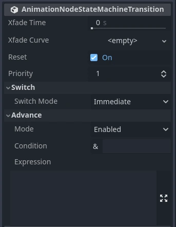
Xfade Time is the time to cross-fade between this state and the next.
Xfade Curve is a cross-fade following a curve rather than a linear blend.
Reset determines whether the state you are switching into plays from the beginning (true) or not (false).
Priority is used together with the
travel()function from code (more on this later). Lower priority transitions are preferred when travelling through the tree.Switch Mode is the transition type (see above). It can be changed after creation here.
Advance Mode determines the advance mode. If
Disabled, the transition will not be used. IfEnabled, the transition will only be used duringtravel(). IfAuto, the transition will be used if the advance condition and expression are true, or if there are no advance conditions/expressions.
Advance Condition and Advance Expression
The last 2 properties in a StateMachine transition are Advance Condition and Advance Expression. When the Advance Mode is set to Auto, these
determine if the transition will advance or not.
Advance Condition is a true/false check. You may put a custom variable name in the text field, and when the StateMachine reaches this transition, it will check if your variable is true. If so, the transition continues. Note that the advance condition only checks if a variable is true, and it cannot check for falseness.
This gives the Advance Condition a very limited capability. If you wanted to make a transition back and forth based on one property, you would need to make 2 variables that have opposite values, and check if either of them are true. This is why, in Godot 4, the Advance Expression was added.
The Advance Expression works similar to the Advance Condition, but instead of checking if one variable is true, it evaluates any expression. An expression
is anything you could put in an if statement. These are all examples of expressions that would work in the Advance Expression:
is_walkingis_walking == true(behaves the same as the one above)is_walking && !is_idlevelocity > 0player.is_on_floor()
Warning
The expression is case-sensitive. If you reference engine properties,
such as velocity on a CharacterBody3D node, you should use
snake_case naming conventions. If you reference script properties,
you should match the style used in the script, which is typically
snake_case in GDScript and PascalCase in C#.
Here is an example of an improperly-set-up StateMachine transition using Advance Condition:
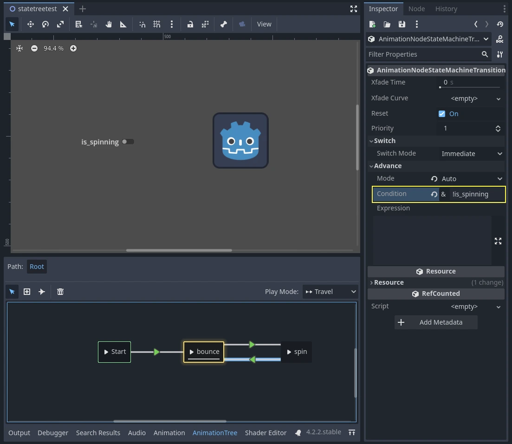
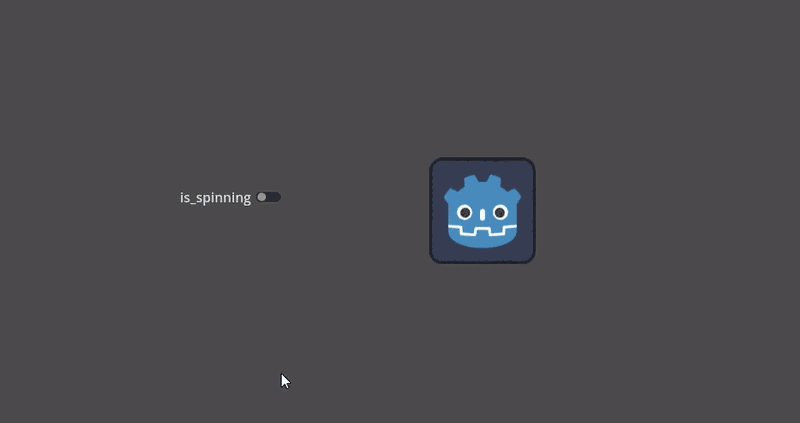
This is not working because there is a ! variable in the Advance Condition, which cannot be checked.
Here is the same example, set up properly, using two opposite variables:

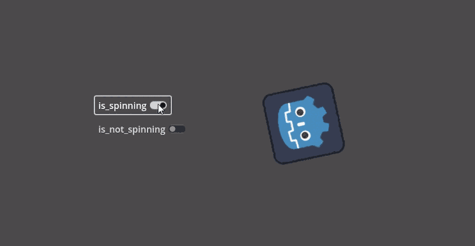
Here is the same example, but using Advance Expression rather than Advance Condition, which eliminates the need for two variables:

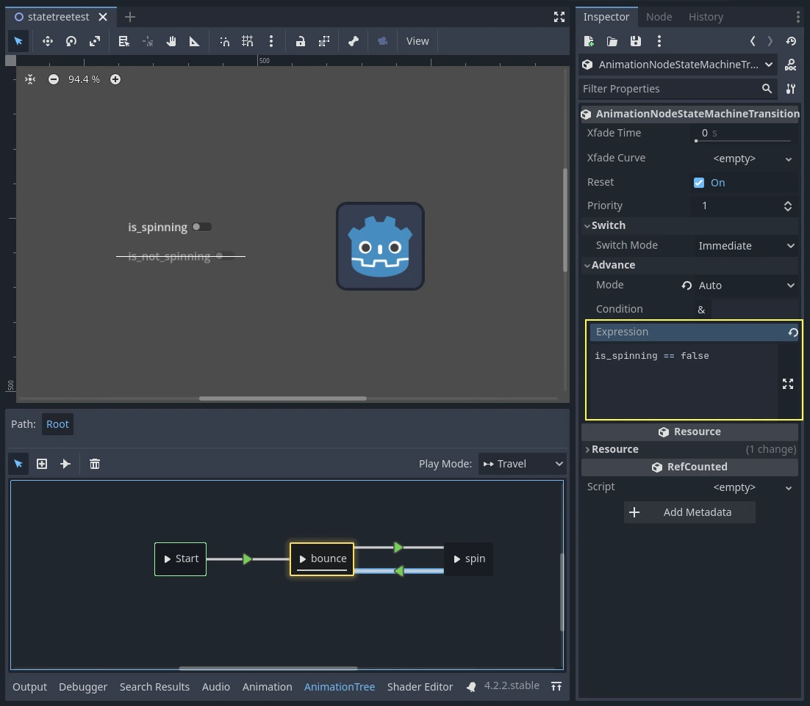
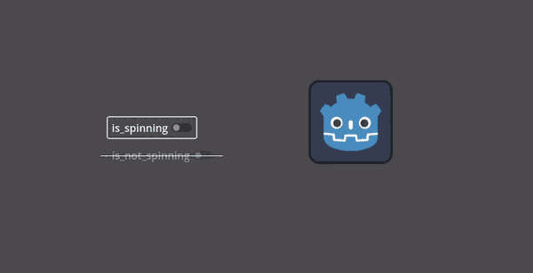
In order to use Advance Expressions, the Advance Expression Base Node has to be set from the Inspector of the AnimationTree node. By default, it is set to the AnimationTree node itself, but it needs to point to whatever node contains the script with your animation variables.
See also
The Advance Expression is evaluated using Godot's Expression class. See Evaluating expressions for more information on writing expressions.
StateMachine travel
One of the nice features in Godot's StateMachine implementation is the ability to travel. You can instruct the graph to go from the
current state to another one, while visiting all the intermediate ones. This is done via the A* algorithm.
If there is no path of transitions starting at the current state and finishing at the destination state, the graph teleports to the destination state.
To use the travel ability, you should first retrieve the AnimationNodeStateMachinePlayback
object from the AnimationTree node (it is exported as a property), and then call one of its many functions:
var state_machine = animation_tree["parameters/playback"]
state_machine.travel("SomeState")
AnimationNodeStateMachinePlayback stateMachine = (AnimationNodeStateMachinePlayback)animationTree.Get("parameters/playback");
stateMachine.Travel("SomeState");
The StateMachine must be running before you can travel. Make sure to either call start() or connect a node to Start.
BlendSpace2D and BlendSpace1D
BlendSpace2D is a node to do advanced blending in two dimensions. Points representing animations are added to a 2D space and then a position between them
is controlled to determine the blending:
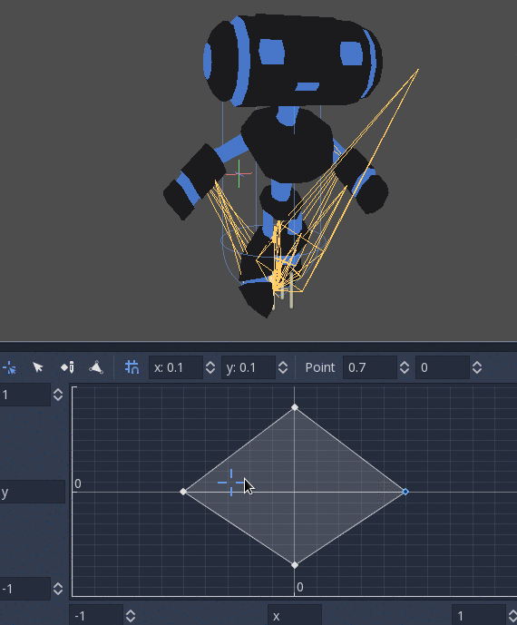
You may insert these points anywhere on the graph by right-clicking or using the add point button in the toolbar. On creation, a point gets its name from the chosen animation or AnimationRootNode type. This point can then be renamed by clicking on its name, or repositioned by clicking and dragging the name or the point. If Auto Triangles is enabled, a blend triangle between inserted points will be automatically generated using Delaunay triangulation.

This node's animation blend target can be manipulated in the editor by pressing Shift while dragging the left mouse button, or using the dedicated tool.
BlendSpace1D works just like BlendSpace2D, but in a single dimension (a horizontal line). Since triangles are not used, it is able to function with fewer than three blend points.

Sync mode
Both BlendSpace1D and BlendSpace2D have a Sync Mode property that controls how animations advance when they are blended.
This replaces the older boolean sync property and offers more precise control.
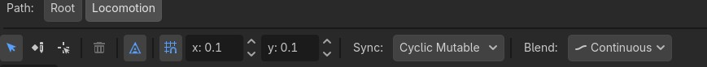
There are four modes available:
None (default): Inactive animations are frozen and do not advance. Only the currently active (highest-weight) animation moves forward.
Independent: Inactive animations advance with a weight of
0. This matches the behavior of the oldsync = truesetting.Cyclic Mutable: All animations are time-scaled so their phases stay aligned. The shared cycle length is computed dynamically from the active blend weights, which means a single unblended animation plays at its normal speed. This is useful when all your animations have the same logical cycle (e.g. locomotion loops) but may differ slightly in length.
Cyclic Constant: All animations are time-scaled to complete one full cycle in exactly Cyclic Length seconds, regardless of their individual lengths. Set the
cyclic_lengthproperty to your desired cycle duration (must be greater than0).
Warning
Cyclic sync modes require that all blend points use AnimationNodeAnimation with a finite, immutable length. If any blend point uses a different node type, a warning will be shown and cyclic sync will not take effect:

Note
When using either cyclic mode with animations of different lengths, applying an AnimationNodeTimeSeek to the output will break synchronization. In that case, use AnimationNodeAnimation.use_custom_timeline to normalize animation lengths before syncing.
Blend mode
By default, blending happens in the Continuous mode, by interpolating points inside the closest triangle in BlendSpace2D, or in the line between points in BlendSpace1D.
However, this may not always be the best choice. For instance, when dealing with frame-by-frame 2D animations, you may want to switch to the Discrete mode,
in which the intermediate states of the blend do not appear in the result. Alternatively, if you want to retain the current play position
when switching between discrete animations, the Carry mode allows you to do so. These modes can be set with the Blend menu.
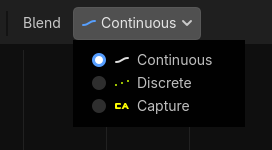
For better blending
For the blending results to be deterministic (reproducible and always consistent), the blended property values must have a specific initial value. For example, in the case of two animations to be blended, if one animation has a property track and the other does not, the blended animation is calculated as if the latter animation had a property track with the initial value.
When using Position/Rotation/Scale 3D tracks for Skeleton3D bones, the initial value is Bone Rest.
For other properties, the initial value is 0 and if the track is present in the RESET animation,
the value of its first keyframe is used instead.
For example, the following AnimationPlayer has two animations, but one of them lacks a Property track for Position.
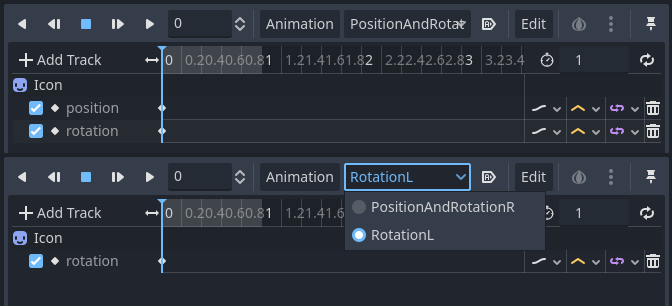
This means that the animation lacking that will treat those Positions as Vector2(0, 0).

This problem can be solved by adding a Property track for Position as an initial value to the RESET animation.


Note
Be aware that the RESET animation exists to define the default pose when loading an object originally.
It is assumed to have only one frame and is not expected to be played back using the timeline.
Also keep in mind that the Rotation 3D tracks and the Property tracks for 2D rotation with Interpolation Type set to Linear Angle or Cubic Angle will prevent rotations greater than 180 degrees from the initial value as blended animation.
This can be useful for Skeleton3Ds to prevent the bones penetrating the body when blending animations. Therefore, Skeleton3D's Bone Rest values should be as close to the midpoint of the movable range as possible. This means that for humanoid models, it is preferable to import them in a T-pose.

You can see that the shortest rotation path from Bone Rests is prioritized rather than the shortest rotation path between animations.
If you need to rotate Skeleton3D itself more than 180 degrees by blend animations for movement, you can use Root Motion.
Root motion
When working with 3D animations, a popular technique is for animators to use the root skeleton bone to give motion to the rest of the skeleton. This allows animating characters in a way where steps actually match the floor below. It also allows precise interaction with objects during cinematics.
When playing back the animation in Godot, it is possible to select this bone as the root motion track. Doing so will cancel the bone transformation visually (the animation will stay in place).
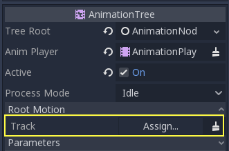
Afterwards, the actual motion can be retrieved via the AnimationTree API as a transform:
# Get the motion delta.
animation_tree.get_root_motion_position()
animation_tree.get_root_motion_rotation()
animation_tree.get_root_motion_scale()
# Get the actual blended value of the animation.
animation_tree.get_root_motion_position_accumulator()
animation_tree.get_root_motion_rotation_accumulator()
animation_tree.get_root_motion_scale_accumulator()
// Get the motion delta.
animationTree.GetRootMotionPosition();
animationTree.GetRootMotionRotation();
animationTree.GetRootMotionScale();
// Get the actual blended value of the animation.
animationTree.GetRootMotionPositionAccumulator();
animationTree.GetRootMotionRotationAccumulator();
animationTree.GetRootMotionScaleAccumulator();
This can be fed to functions such as CharacterBody3D.move_and_slide to control the character movement.
There is also a tool node, RootMotionView, you can place a scene that will act as a custom floor for your
character and animations (this node is disabled by default during the game).
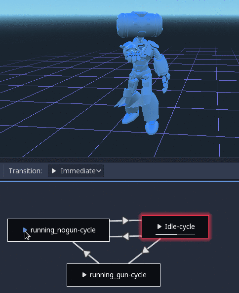
Controlling from code
After building the tree and previewing it, the only question remaining is "How is all this controlled from code?".
Keep in mind that the animation nodes are just resources, so they are shared between all instances using them.
Setting values in the nodes directly will affect all instances of the scene that uses this AnimationTree.
This is generally undesirable, but does have some cool use cases, e.g. you can copy and paste parts of your animation tree,
or reuse nodes with a complex layout (such as a StateMachine or blend space) in different animation trees.
The actual animation data is contained in the AnimationTree node and is accessed via properties.
Check the "Parameters" section of the AnimationTree node to see all the parameters that can be modified in real-time:

This is handy because it makes it possible to animate them from an AnimationPlayer, or even the AnimationTree itself,
allowing very complex animation logic.
To modify these values from code, you must obtain the property path. You can find them by hovering your mouse over any of the parameters:
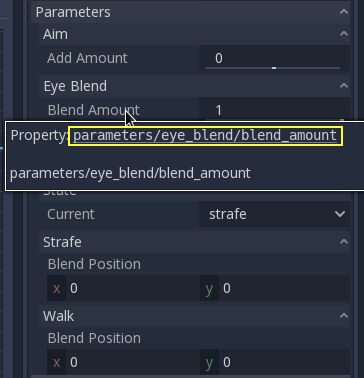
Then you can set or read them:
animation_tree.set("parameters/eye_blend/blend_amount", 1.0)
# Alternate syntax (same result)
animation_tree["parameters/eye_blend/blend_amount"] = 1.0
animationTree.Set("parameters/eye_blend/blend_amount", 1.0);
Note
Advance Expressions from a StateMachine will not be found under the parameters. This is because they are held in another script rather than the AnimationTree itself. Advance Conditions will be found under parameters.